변리사-1차(3교시) (2013-02-23 기출문제)
1. 질량 20 kg인 물체가 길이 3.0m인 늘어나지 않는 강체 줄에 연결되어 단진자 운동을 하고 있다. 이 물체가 가장 낮은 위치를 통과할 때, 줄의 장력이 260 N이다. 이 물체가 운동하는 최고점과 최저점의 높이(m) 차이는? (단, 공기의 마찰력과 줄의 질량은 무시하고, 중력가속도 크기는 10 m/s2 이다.)
- 0.20
- 0.31
- 0.45
- 0.62
- 0.80
(정답률: 알수없음)

2. 그림은 도선의 단면적이 A인 무한히 긴 직선도선과 도선의 단면적이 A/2인 직사각형 도선고리가 d만큼 떨어져 한 평면상에 놓여 있는 것을 보인 것이다. 직선도선과 직사각형 도선고리에 흐르는 전류밀도(
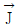
)는 같고, 직사각형 도선고리의 각 변의 길이는 각각 a와 l이다. 직선도선과 직사각형 도선고리 사이에 작용하는 알짜힘을 나타낸 것은? [단, μ0는 투자율(permeability)이고, 두 도선은 이상적인 도선이다.]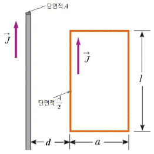
- 인력,
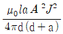
- 척력,

- 인력,

- 척력,
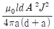
- 인력,
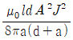
(정답률: 알수없음)
3. 질량 M = 1.00 kg인 나무토막이 높이가 h = 1.25 m인 탁자 끝에 놓여있다. 질량 m = 10.0 g인 총알이 발사되어 바닥에 평행한 방향으로 나무토막에 박힌 후 탁자로부터 거리 L = 8.00 m인 지점에 떨어졌다. 나무토막에 입사되기 직전 총알의 속력(m/s)은? (단, 나무토막과 탁자사이의 마찰은 무시하고, 충돌 후 나무토막과 총알의 운동은 질점운동으로 가정한다. 중력가속도의 크기는 10 m/s2 이다.)
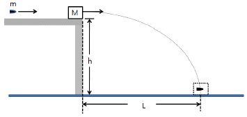
- 202
- 404
- 808
- 1,616
- 3,232
(정답률: 알수없음)
4. 길이가 L이고 질량이 M인 균질한 막대가 수직 벽에 박혀있는 못을 회전축으로 하여 진동할 수 있도록 설치되어 있다. 그림과 같이 막대를 수평으로 하여 가만히 놓았을 때, 회전축의 반대편에 있는 막대 끝의 최초 접선가속도(
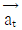
)의 크기는? (단, 막대와 못, 공기 및 벽면 사이의 마찰력은 무시하고, 회전축은 막대의 끝에 위치해 있다. 중력가속도의 크기는 g이다.)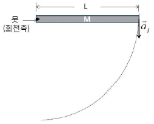
- 2g / 3
- 5g / 4
- 4g / 3
- 3g / 2
- 5g / 2
(정답률: 알수없음)
5. 그림의 회로에서 점 a와 b사이의 전위차(
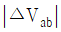
)와 3Ω의 저항에서 5초 동안 소모되는 에너지(E)는? = 3V, E = 15J
= 3V, E = 15J = 3V, E = 30J
= 3V, E = 30J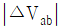
= 6V, E = 60J = 9V, E = 135J
= 9V, E = 135J = 12V, E = 240J
= 12V, E = 240J
(정답률: 알수없음)
6. 반지름이 R인 원형 고리에 전하량 Q가 균일하게 분포해 있다. 원의 중심을 지나는 대칭축을 따라 중심점에서 2R만큼 떨어진 P점에서 전기장의 크기는? (단, 쿨롱상수는 k로 표기한다.)
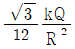
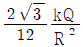
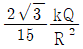
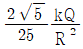
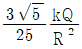
(정답률: 알수없음)
7. 그림과 같이 온도 Th =127℃인 고온 열원과 온도 Tc =27℃인 저온 열원 사이에서 작동하여 외부에 일(W)을 하는 Carnot 열기관이 있다. 이 열기관의 사용 가능한 출력 일률은 2.0 kW이다. 이 열기관이 매 순환 과정마다 15 kJ의 열을 배출할 때, 한 번의 순환 과정에서 소요되는 시간(s)은? (단, 0℃의 절대 온도는 273 K이다.)
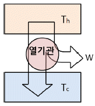
- 2.0
- 2.5
- 3.0
- 3.5
- 4.0
(정답률: 알수없음)
8. 그림은 실리콘(Si) 결정의 표면 위에 일산화실리콘(SiO) 박막을 코팅하여 제작한 태양전지에 입사각이 θ로 태양광이 입사되고 반사되는 것을 보인 것이다. Si와 SiO의 굴절률은 각각 nSi = 3.50, nSiO = 1.45이다.
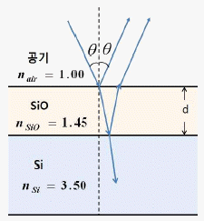
입사되는 빛의 중심 파장이 580 nm일 때, 입사각이 θ = 0°로 입사되는 빛의 반사가 최소로 되는 SiO박막의 최소 두께 d (nm)는?
- 25.0
- 50.0
- 60.0
- 80.0
- 100
(정답률: 알수없음)
9. 폭이 L인 1차원 무한 퍼텐셜우물에 갇힌 전자의 파동함수에서 확률의 규격화(normalization)로부터 구한 진폭을 A라 할 때, 폭을 절반으로 줄인 우물의 파동함수 진폭은?
- A
- 2A
- A / 2
- A / √2
- √2 A
(정답률: 알수없음)
10. 일함수가 2.14 eV인 세슘(Cs) 금속 표면에 파장이 310 nm인 자외선을 조사하였을 때, 방출되는 광전자의 최대 운동에너지(eV)는? (단, 플랑크상수 h와 빛의 속력 c의 곱은 1,240 eVㆍnm로 한다.)
- 1.68
- 1.86
- 2.08
- 2.58
- 2.79
(정답률: 알수없음)
11. 다음 중 고분자가 합성될 때 물이 빠져나오면서 형성되는 것은?
- 폴리에틸렌
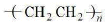
- 폴리염화비닐
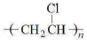
- 폴리스티렌
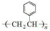
- 폴리아세트산비닐
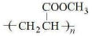
- 폴리에스터
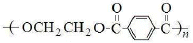
(정답률: 알수없음)
12. 다음 화합물 중 카이랄 중심(chiral center)이 있으면서 끓는점이 가장 높은 것은?
- CH3CH2CHFCl
- CH3CH=CFCl
- (CH3)3CCH2CHFCl
- CH3CH2CH2CH2CH2CHFCl
- (CH3)2CFCH2CH2CH2Cl
(정답률: 알수없음)
13. 그림은 3가지 화합물 디에틸에터(CH3CH2OCH2CH3), 아세톤(CH3COCH3), 일산화탄소(CO)에 대하여 탄소(C)와 산소(O) 결합의 신축(stretching) 진동의 저분해능 적외선 분광스펙트럼(low resolution IR spectrum)을 각각 도식적으로 나타낸 것이다.
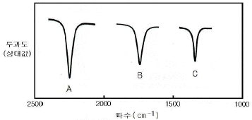
스펙트럼 A, B, C에 해당하는 화합물을 순서대로 옳게 나열한 것은? (단, 파수(cm-1)는 파장의 역수이다.)
- 아세톤-디에틸에터-일산화탄소
- 디에틸에터-아세톤-일산화탄소
- 디에틸에터-일산화탄소-아세톤
- 일산화탄소-아세톤-디에틸에터
- 일산화탄소-디에틸에터-아세톤
(정답률: 알수없음)
14. 배위화합물 A, B, C는 각각 [Cr(H2O)6 ]Cl3, [ Cr(H2O)5Cl ]Cl2, [ Cr(H2O)4Cl2 ]Cl 중 하나이고, 표는 각 배위화합물 1mol의 실험 결과를 나타낸 것이다.
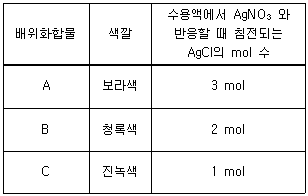
이에 대한 설명으로 옳지 않은 것은? (단, Cr의 원자 번호는 24이다.)
- A는 6개의 동일한 리간드를 갖는다.
- B의 Cr은 3개의 d전자를 지닌다.
- C는 기하이성질체를 갖는다.
- 수용액에서 전기 전도도는 A가 B보다 크다.
- 결정장 갈라짐 에너지(△o)는 A가 C보다 작다.
(정답률: 알수없음)
15. 그림은 온도 T에서 aA(g) ⇄ bB(g) 반응을 강철 용기에서 진행시켜 평형 상태에 도달한 후, t1 에서 온도를 2배(2T)로 증가시켜 새로운 평형에 도달할 때의 시간에 따른 A와 B의 농도를 나타낸 것이다.
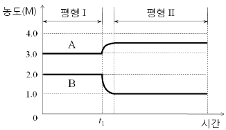
이에 대한 설명으로 옳은 것은? (단, a와 b는 반응 계수이다.)
- a = 2b 이다.
- 평형 Ⅱ에서 평형 상수는 2/7 이다.
- 정반응은 흡열 반응이다.
- 평형 Ⅰ에서 A를 첨가하면 정반응의 활성화에너지가 증가한다.
- 평형 Ⅰ에서 아르곤(Ar)을 첨가하면 정반응이 우세해진다.
(정답률: 알수없음)
16. 일정한 외부압력에서 그림과 같은 단열 장치에 이상기체가 들어 있다.
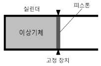
고정 장치를 풀었더니 이상기체가 팽창하여 피스톤이 오른쪽으로 이동하였다. 이 과정에서 이상기체의 w, △T, △S, △U, △G로 옳은 것은? (단, 피스톤의 질량과 마찰은 무시한다. w는 이상기체가 한 일, T는 절대 온도, S는 엔트로피, U는 내부 에너지, G는 깁스 자유 에너지이다.)
- w = 0
- △T = 0
- △S ＜ 0
- △U ＜ 0
- △G ＞ 0
(정답률: 알수없음)
17. 그림 (가)는 메테인(CH4)과 질소(N2)가 각각 0.4기압과 0.8기압인 1 L의 강철 용기 A와 CH4의 압력이 0.1기압인 2 L의 강철 용기 B가 콕으로 연결된 것을, (나)는 (가)의 콕을 열어 평형에 도달한 상태를 나타낸 것이다.
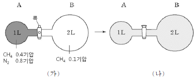
이에 대한 설명으로 옳은 것만을 보기에서 있는 대로 고른 것은? (단, 기체는 이상 기체이며, 연결관과 콕의 부피는 무시하고 온도 변화는 없다.)
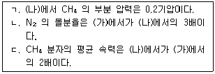
- ㄱ
- ㄱ, ㄴ
- ㄱ, ㄴ, ㄷ
- ㄴ
- ㄷ
(정답률: 알수없음)
18. 그림은 수소 원자의 에너지 준위와 전자 전이를 나타낸 것이다.
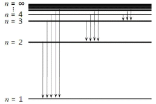
수소 원자의 바닥상태 전자가 이온화하는데 필요한 에너지의 크기를 Ei라고 할 때, 첫 번째 들뜬 상태에서 두 번째 들뜬 상태로 전자가 전이할 때 흡수하는 에너지는?
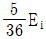
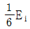
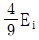
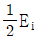
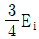
(정답률: 알수없음)
19. 그림은 갈바니 전지를 나타낸 것이고, 표는 25 ℃에서 전극 금속과 관련된 반쪽반응의 표준 환원 전위(Eo)이다.
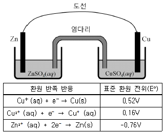
전지가 작동할 때, 이에 대한 설명으로 옳지 않은 것은? (단, Cu와 Zn의 원자량은 각각 63과 65이다.)
- 전지가 작동할수록 환원 전극이 들어있는 용액의 푸른색이 옅어진다.
- 환원 전극의 표준 환원 전위는 0.36 V이다.
- 전지의 표준 전위는 1.10 V이다.
- 염다리를 통해 이동하는 양이온의 총전하량과 음이온의 총전하량의 각 절대값은 같다.
- 산화 전극에서 감소한 금속의 질량은 환원 전극에서 석출된 금속의 질량보다 크다.
(정답률: 알수없음)
20. 일정한 온도에서 A(g) + B(g) → 2C(g) 반응의 실험을 수행하였다. 그림(가)는 [B]0 ≫ [A]0 일 때 시간에 따른 [A]를, (나)는 [A]0 ≫ [B]0 일 때 시간에 따른 1/[B]를 나타낸 것이다. [A]0와 [B]0는 각각 A와 B의 초기 농도이다.
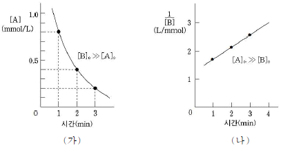
이에 대한 설명으로 옳은 것은?
- A의 반감기는 2분(min)이다.
- B에 대하여 1차 반응이다.
- B의 반감기는 B의 농도에 반비례한다.
- C의 생성 속도는 A의 소멸 속도의 1/2 이다.
- 전체 반응의 반응 차수는 2이다.
(정답률: 알수없음)
21. 인슐린과 관련된 설명으로 옳은 것만을 보기에서 있는 대로 고른 것은?
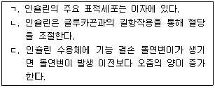
- ㄱ
- ㄱ, ㄴ, ㄷ
- ㄱ, ㄷ
- ㄴ
- ㄴ, ㄷ
(정답률: 알수없음)
22. 어느 환자의 심전도에서 심방의 수축은 규칙적이지만, 심방수축 후의 심실수축은 불규칙한 것이 관찰되었다. 이 환자는 심장주기(cardiac cycle) 동안 심장의 전기신호 전도 과정에 이상이 생긴 것으로 확인되었다. 다음 중 이 환자에서 기능에 이상이 생긴 것으로 판단되는 부위로 가장 적절한 것은?
- 방실결절
- 반월판
- 관상동맥
- 동방결절
- 폐정맥
(정답률: 알수없음)
23. 다음은 어떤 유전질환을 가진 집안의 가계도이다.
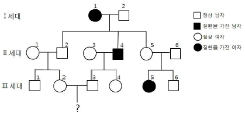
이 유전질환에 대한 설명으로 옳은 것만을 보기에서 있는 대로 고른 것은?
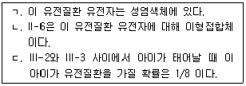
- ㄱ
- ㄱ, ㄴ
- ㄴ
- ㄴ, ㄷ
- ㄷ
(정답률: 알수없음)
24. 다음 중 세포막에 대한 설명으로 옳지 않은 것은?
- 세포막의 유동성은 불포화 지방산이 많아질수록 커진다.
- 세포막을 구성하는 인지질은 수평 이동을 하지 않는다.
- 세포막 외부로 돌출된 일부 당단백질은 세포간 인식에 관여한다.
- 세포막의 인지질은 양친매성 분자(amphipathic molecule)이다.
- 지질 이중층 내부와의 친화력은 내재성 막단백질(integral membrane protein)이 표재성 막단백질(peripheral membrane protein)보다 크다.
(정답률: 알수없음)
25. 다음 중 엽록체와 미토콘드리아에서 공통적으로 일어나는 것은?
- 빛에너지의 화학에너지로의 전환
- H2O를 분해하여 O2를 방출하는 과정
- 막을 통한 H+의 이동
- CO2로부터 당이 합성되는 과정
- NADP+의 환원반응
(정답률: 알수없음)
26. 2n=6인 세포가 분열할 때 아래와 같은 염색체 배열이 나타나는 시기는?
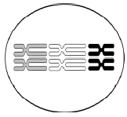
- 체세포분열 중기
- 제1 감수분열 중기
- 제2 감수분열 중기
- 감수분열이 끝난 직후
- 체세포분열이 끝난 직후
(정답률: 알수없음)
27. 진핵세포 RNA에 대한 설명으로 옳은 것은?
- 진핵세포 RNA는 한 가지 RNA 중합효소에 의해 합성된다.
- 전사된 mRNA에 poly(A)가 첨가될 때 주형 DNA(template DNA)가 필요하다.
- 5′-capping이 일어나는 장소는 세포질이다.
- 스플라이싱에 의해 3′-UTR(untranslated region) 부위가 제거된다.
- 스플라이싱 복합체(spliceosome)에는 snRNP가 포함되어 있다.
(정답률: 알수없음)
28. 진핵세포의 유전자 발현에 대한 설명으로 옳은 것만을 보기에서 있는 대로 고른 것은?
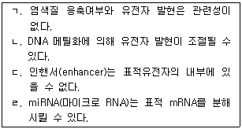
- ㄱ, ㄴ
- ㄱ, ㄷ
- ㄱ, ㄷ, ㄹ
- ㄴ, ㄷ, ㄹ
- ㄴ, ㄹ
(정답률: 알수없음)
29. 종(species)의 상호작용에 대한 설명으로 옳은 것만을 보기에서 있는 대로 고른 것은?
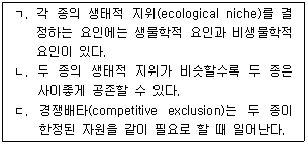
- ㄱ
- ㄱ, ㄴ
- ㄱ, ㄷ
- ㄴ
- ㄴ, ㄷ
(정답률: 알수없음)
30. (가)∼(다)는 지금까지 발견된 화석을 근거로 하여 명명된 사람류(hominins)종의 일부이다.
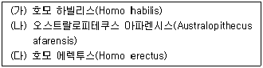
(가), (나), (다)를 과거로부터 현존하는 호모 사피엔스(Homo sapiens) 이전까지 시간에 따라 옳게 나열한 것은?
- (가)-(나)-(다)
- (가)-(다)-(나)
- (나)-(가)-(다)
- (나)-(다)-(가)
- (다)-(나)-(가)
(정답률: 알수없음)
31. 방사성원소 A와 B의 반감기는 각각 2억년과 3억년이다. 어떤 지층 속에 A의 양이 처음보다 1/8 의 양으로 감소하였고, B의 양은 처음보다 1/4의 양으로 감소하였다. A와 B의 절대 연령은 각각 얼마인가?
- 8억년, 9억년
- 8억년, 6억년
- 8억년, 4억년
- 6억년, 9억년
- 6억년, 6억년
(정답률: 알수없음)
32. 일부 암석은 지하수 등 물의 용해작용에 의해 특이한 모양으로 만들어진다. 이와 같이 물의 용해작용으로 만들어진 것을 보기에서 고른 것은?
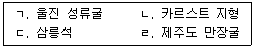
- ㄱ, ㄴ
- ㄱ, ㄷ
- ㄱ, ㄹ
- ㄴ, ㄷ
- ㄴ, ㄹ
(정답률: 알수없음)
33. 해륙풍의 원리에 대한 설명으로 옳은 것만을 보기에서 있는 대로 고른 것은?
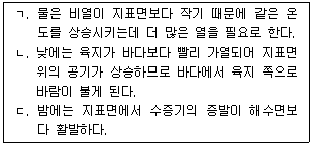
- ㄱ
- ㄱ, ㄴ, ㄷ
- ㄱ, ㄷ
- ㄴ
- ㄴ, ㄷ
(정답률: 알수없음)
34. 다음 중에서 지각변동의 증거로 볼 수 없는 것은?
- 융기해빈
- 습곡과 단층
- 암석풍화
- 해안단구
- 침강해안
(정답률: 알수없음)
35. 판구조론에 의하면 지각은 여러 개의 판들로 구성되어 있으며, 이 판들의 상호작용에 의해 다양한 지질구조가 형성된다. 다음 중 이와 관련된 설명으로 옳은 것을 보기에서 고른 것은?
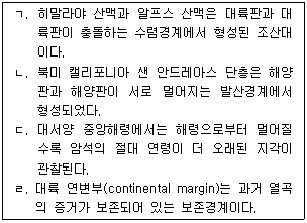
- ㄱ, ㄴ
- ㄱ, ㄷ
- ㄱ, ㄹ
- ㄴ, ㄷ
- ㄷ, ㄹ
(정답률: 알수없음)
36. 그림은 지구 대기 대순환을 나타낸 모식도이다.
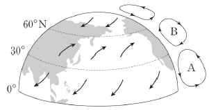
이에 대한 설명으로 옳지 않은 것은?
- 대기 대순환은 위도별 에너지의 불균형에 의해 일어난다.
- 위도 0°~30°N 사이에는 무역풍이 분다.
- 위도 60°N 부근보다 위도 30°N 부근에서 저기압이 잘 형성된다.
- A는 해들리 순환(Hadley cell), B는 페렐 순환(Ferrell cell)이다.
- 중위도 상층에서 기압경도력에 의해 형성된 바람은 편서풍으로 분다.
(정답률: 알수없음)
37. 다음 그림 (가)와 (나)는 등압선 P1과 등압선 P2사이의 간격이 서로 다른 북반구 어느 지역의 지상풍을 나타낸 것이다.
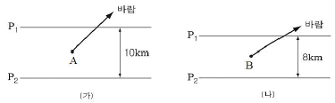
이에 대한 설명으로 옳은 것은? (단, 화살표는 바람의 방향만을 나타내며 바람의 세기와는 무관하다.)
- 풍속은 A 지점보다 B 지점이 크다.
- 기압은 P1이 P2보다 높다.
- A 지점의 전향력은 B 지점의 전향력보다 크다.
- (가)의 기압경도력과 전향력은 같다.
- P1과 P2사이의 기압경도력은 (가)와 (나)가 같다.
(정답률: 알수없음)
38. 그림은 달의 공전을 나타내는 모식도이다.
어느 날 서울에서 새벽 4시경에 반달이 떠 있는 모습을 보았다. 이 달이 떠 있는 하늘의 방향과 그림에서 달의 위치로 옳은 것은?
- 남동쪽 하늘, A
- 북서쪽 하늘, A
- 남동쪽 하늘, B
- 남동쪽 하늘, C
- 남서쪽 하늘, D
(정답률: 알수없음)
39. 그림 (가)는 현재의 지구 자전축의 경사각과 경사방향을, (나)는 미래의 지구 자전축의 경사각과 경사방향을 나타낸 것이다. 아래 그림에 관한 설명으로 옳지 않은 것은? (단, 공전 궤도 이심률의 변화는 없다.)
- (가)에서 지구가 A에 위치할 때 북반구는 겨울철이다.
- (나)는 약 13,000년 후의 모습이다.
- (나)에서 지구가 B에 위치할 때 우리나라는 여름철에 해당한다.
- 세차운동 때문에 춘분점은 1년에 각으로 약 50″씩 황도를 따라 이동한다.
- 자전축의 경사각만을 고려한다면 기온의 연교차는 (가)보다 (나)에서 더 작을 것이다.
(정답률: 알수없음)
40. (가)와 (나)는 특성이 서로 다른 변광성의 밝기 변화를 나타낸 것이다.
자료에 대한 설명으로 옳은 것만을 보기에서 있는 대로 고른 것은?
- ㄱ
- ㄱ, ㄴ
- ㄱ, ㄴ, ㄷ
- ㄱ, ㄷ
- ㄴ
(정답률: 알수없음)
최저점에서의 위치에너지는 mgh로 계산할 수 있다. 여기서 h는 최저점에서의 높이이다. 최저점에서의 중력은 mg이므로, 줄의 장력은 260 N이므로 최저점에서의 위치에너지는 20 x 10 x h = 200h이다.
최고점에서의 위치에너지는 최저점에서의 위치에너지와 같으므로 200h이다. 최고점에서의 운동에너지는 0이므로, 최고점에서의 위치에너지는 mgh로 계산할 수 있다. 여기서 h는 최고점에서의 높이이다. 따라서 200h = 20 x 10 x h - 260 x 3.0 이므로, h = 0.45이다. 따라서 정답은 "0.45"이다.